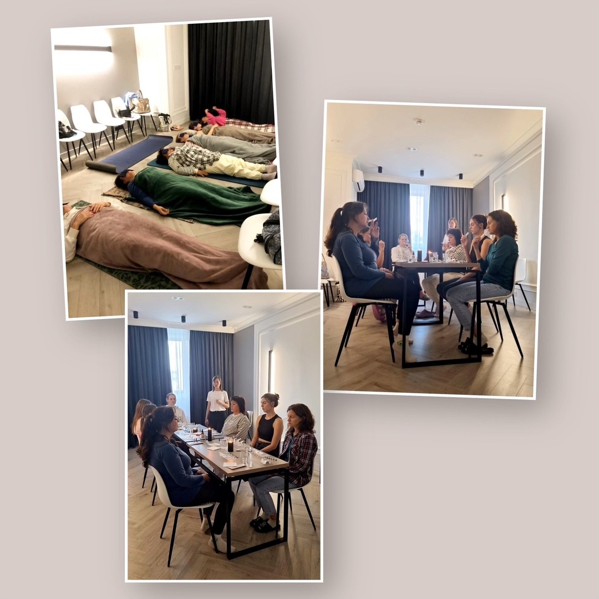

Вдох-выдох
Друзья, 21 сентября прошла незабываемая практика, объединившая аромамедитацию и йога-нидру. 🌟
Этот вечер оставил невероятное впечатление у всех участниц! В воздухе витали чарующие ароматы,
которые помогали нам глубже погрузиться в медитацию и открыть новые горизонты внутреннего мира. 🕯🌺
Йога-нидра сопровождала нас в состояние глубокого расслабления, позволив отпустить напряжение и
наполниться энергией. Каждый, кто присутствовал, смог прикоснуться к истинному покою и гармонии
внутри себя. 🧘♀💖
Благодарим всех, кто присоединился к этой волшебной практике и сделал её такой запоминающейся!
Ретрит на природе


Друзья, в прошедшие выходные мы провели двухдневный ретрит 🧚♂
Мы посветили это время практике йоги, живому общению, оздоровлению тела и души!
У меня остались самые светлые эмоции от нашего мероприятия, мы получили не только пользу от практик, но и неоценимую поддержку друг друга 🙏🙏🙏
У нас были 2 практики йога-нидры ("Женщина, которая смогла расслабиться" и "Шавасана 61 точка"), которые помогли восстановить физические и духовные силы.
Отдельно хочу сказать о том, что из 6 участниц, попробовавших встать на гвозди, трое встали и стояли около 30 минут! Я очень рада этому!
Вы большие молодцы!
Благодарю всех, кто принял участие в нашей встрече.
И конечно жду вас на занятиях! 💗